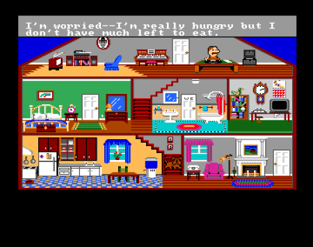

В 1980-е с появлением персональных компьютеров начало формироваться направление разработки игр для них. Поначалу игры создавали энтузиасты-разработчики, но по мере роста производительности и распространения персональных систем, для них стали выпускаться уже коммерческие игровые продукты. В это время появились первые стратегии и сложные RPG миры. Но все же основой игровой индустрии оставались аркадные автоматы и специализированные игровые приставки.
